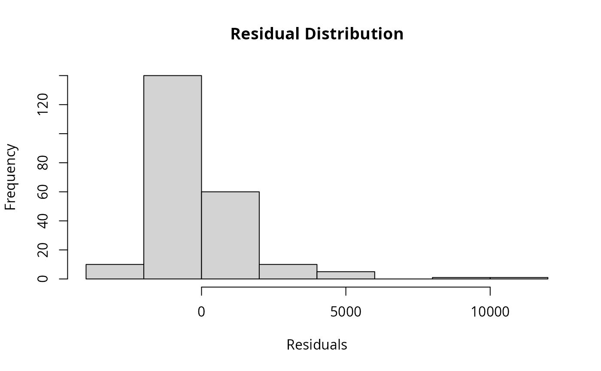

Extracts residuals (observed - predicted values) from models fitted with rf(), rf_repeat(), or rf_spatial().
Arguments
- model
Model object from
rf(),rf_repeat(), orrf_spatial().
Value
Numeric vector of residuals with length equal to the number of training observations. For rf_repeat() models, returns the median residual across repetitions.
Details
Residuals are calculated as observed minus predicted values. They can be used to assess model fit, check assumptions, and diagnose patterns such as spatial autocorrelation (see get_moran()). Ideally, residuals should be randomly distributed with no systematic patterns.
See also
rf(), rf_repeat(), rf_spatial(), get_predictions(), get_moran(), plot_residuals_diagnostics()
Other model_info:
get_evaluation(),
get_importance(),
get_importance_local(),
get_moran(),
get_performance(),
get_predictions(),
get_response_curves(),
get_spatial_predictors(),
print.rf(),
print_evaluation(),
print_importance(),
print_moran(),
print_performance()
Examples
data(plants_rf)
# Extract residuals
residuals <- get_residuals(plants_rf)
head(residuals)
#> [1] -58.03859 -1194.76562 -158.71363 1335.94372 716.88626 -212.86886
# Check basic statistics
summary(residuals)
#> Min. 1st Qu. Median Mean 3rd Qu. Max.
#> -3408.93 -847.75 -302.35 -61.71 325.94 11040.86
# Plot distribution to check for patterns
hist(residuals, main = "Residual Distribution", xlab = "Residuals")
